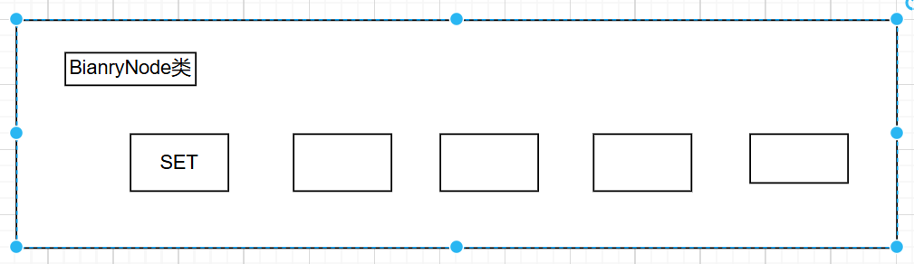
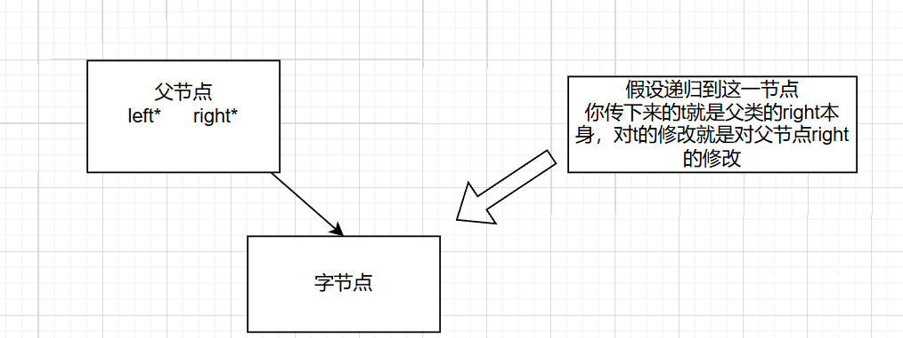

二叉查找树
- 先附上完整的代码
1 | template <class KEY,class OTHER> |
前提组成
template <class KEY,class OTHER> struct SET { KEY key; //关键字信息 OTHER other; //和其他信息 };这就是二叉查找树的父类**动态查找表**，也可以看作一个模板而已，提供了基础的一个动态查找的基本功能模板1
2
3
4
5
6
7
8
9
10
11
12
13
14
15
这是基本的数据元素
分别包括**键值**key和**其他值**value（就像字典里面对应的查找关键和词语解释）
- ~~~c++
template<class KEY,class OTHER>
class dynamicSearchTable
{
public:
virtual SET<KEY, OTHER>* find(const KEY& x) = 0; //查找目标元素，返回值为指针
virtual void insert(const SET<KEY, OTHER>& x) = 0; //插入功能
virtual void remove(const KEY& x) = 0; //显然是删除功能
virtual ~dynamicSearchTable() {}; //析构函数
};
动态二叉树
- 动态二叉树的主体类函数
1 | template<class KEY, class OTHER> |
树的节点分析：
1 | struct BinaryNode |
注意：后面经常会用到公有函数调用私有函数，虽然名称一样，但一个面向使用者，私有的面向共有的函数调用内部
1 | void remove(const KEY& x) //删除函数（公有，面向使用者） |
接下来分析函数的实现
- 构造函数
1 | template<class KEY, class OTHER> |
- makempty
主要还是递归循环删除，采用了前序遍历的思想
1 | template<class KEY, class OTHER> |
拓展：其实最近刷题还看到了一种实现方法就是入队和出队在这里
优点：就是摆脱了递归的对于空间的大量调用，利用循环和队列实现（更多是在链表使用的方法）
其实这是层序遍历的使用方法，只是用这个实现了层序遍历的删除方式
2
3
4
5
6
7
8
9
10
11
12
13
14
15
>Queue<BinaryNode*> queue; //存放节点指针的队列
>template<class KEY, class OTHER>
>void BinarySearchTree<KEY, OTHER>::makeEmpty(BinaryNode* t)
>{
queue.enqueue(t); //先把根节点放入队列
while(t.isempty()) //终止条件：检查队列是否为空，不空则继续进行
{
BinaryNode* t=queue.dequeue(); //出队队列的第一个节点
if(t->left!=nullptr)queue.enqueue(t->left); //左子节点有就放进队列，没则不处理
if(t->right!=nullptr)queue.enqueue(t->right); //同理
delete t; //然后删除自己
}
>}
- 析构函数
1 | template<class KEY, class OTHER> |
- 插入函数（insert）
从这插入函数观察二叉树的构成特点：左子节点小于父节点，右子节点大于父节点（节点不会重复）
这个特点就导致插入的时候有一个特性：以这个特点往下寻找插入点必然是叶节点，从而使插入特别方便。
函数还是递归实现的函数，逐次往下寻找（二叉树的结构导致如果树高了必然会导致搜索耗费大量的时间，之后会有扁平的处理方法）
1 | template<class KEY, class OTHER> |
- 查找函数（find）
查找函数就是基于二叉树的结构特点建立的，左小右大
1 | template<class KEY, class OTHER> |
注意：有人可能会注意到，t不是BinarNode吗，怎么能强制转换为SET类的指针啊
这里需要解释一下结构体和类的一个特点：
对于类和结构的存贮使从第一个数据成员开始的。
举个例子：对于BinarNode的存储空间第一个就是存放的SET，因为在定义里面是写在第一个的。
从而对于指向BinaryNode存储空间的指针某种意义上也是指向了SET的开头，进而可以进行强制转换
2
3
4
5
6
7
8
9
10
struct BinaryNode
{
SET<KEY, OTHER>data;
BinaryNode* left;
BinaryNode* right;
BinaryNode(const SET<KEY, OTHER>& thedata, BinaryNode* It = NULL,
BinaryNode* rt = NULL):data(thedata),right(rt){}
}; BinaryNode* root;
- 删除函数（remove）
主体思路：
- 删除大体是这个思路为了保证树的结构不变，主要分三种情况
- 1.如果这个删除节点没有度数为0，很简单删除就好了
- 2.只有一个子节点，把字节点复制上去，把字节点删除
- 3.这个最复杂，因为他又俩个节点，为了保证树结构不变必然是在叶子节点中找到最靠近这个节点的数
- 其实根据这个查找二叉树的结构，分析出最接近的是左子节点一直往子节点的右子节点找（左子节点<x<当前节点），或者是右子节点的左子节点一直找（当前节点<x<右子节点）
- 对于这题我们假设向右子节点寻求最接近的值
最关键的是：
首先，替代问题，为了保证稳定性必须要替换一个最接近的节点互换位置，顶替
其次由于结构最接近无非 最近但小于（左节点的最右节点）和最近但大于 （右节点的最左字节点）
这个寻找方法便捷的地方在于必然是叶子节点替换，也易于删除
1 | //这里的实现主要是最右子节点最左节点（大于且最靠近的树） |
有一点需要注意：
我们发现节点的参数传递都是引用传递，那是为了方便节点直接替换
例如remove，正是因为引用传递，在层层递归中确保每次传下来的t都是确确实实来自于父节点里面直接的左右节点的指针
这样就维持了上下关系，确保修改是有效的

##总结：至此就分析结束了
（有时间在这里补一个二叉树查找性能的分析）